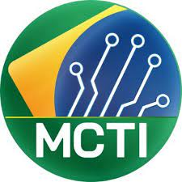

MW Informática
Canal no YouTube apresentado por Miguel Wilbert para informar sobre tecnologia de um jeito simples e descomplicado. O canal apresenta testes, gameplays, unboxing, análises de hardware e peças que compõe os PC's
O Ministério da Ciência, Tecnologia e Infomação tem um canal no YouTube onde são postados conteúdos como bate papos sobre tais assuntos, palestras e informações sobre tecnologias atuais, ciência e tecnologia no cotidiano, entrevistas com personalidades e autoridades e demais assuntos, focando no nosso país.
Canal no YouTube apresentado por Miguel Wilbert para informar sobre tecnologia de um jeito simples e descomplicado. O canal apresenta testes, gameplays, unboxing, análises de hardware e peças que compõe os PC's
Portal de Informações que começou no ano de 2005 como um programa de televisão exibido em rede nacional pela Rede TV!. Possuem um trajeto inovado e criam tendências levando informação acessível e de todos os níveis para todo mundo com qualidade, informando sobre o mundo da tecnologia, pois para eles, no século 21, fazer parte desse universo é uma necessidade básica.
Podcast prouzido por José Rodrigo Lara Schaeffer, que trata de assuntos como protocolos da internet, sistemas operacionais, segurança da informação e outros assuntos tecnológicos.
Podcast que retrata vários aspectos sobre a vida digital e tecnologias da atualidade, com comentários, entrevistas e reportagens mais falados do momento. O assunto mais gravado do último momento foi a questão do funcionamento de algumas redes sociais que pararam, como o Whastapp, Facebook e instagram. Outros exemplos de assuntos são os robôs, revolução tecnológica, tecnologia 5G, novos smartphones, etc.